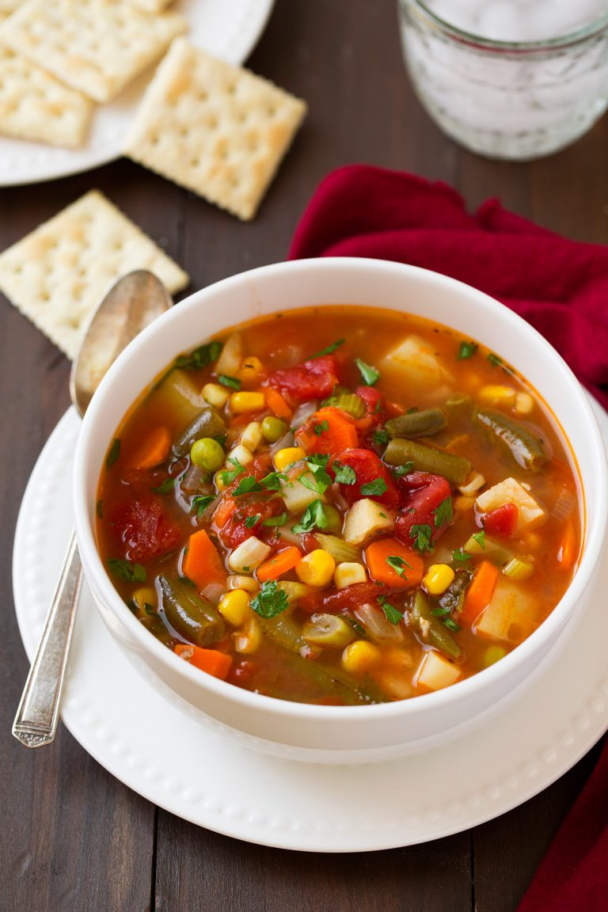

Vegetable Soup

About this recipe
This Vegetable Soup has become one of my most popular soup recipes and for good reason! It's healthy, it's comforting and 1,000 times better than what you'll get in a can! Full of flavor and so easy to make you can't go wrong with a big warm bowl of vegetable soup.
ingredients needed
- Olive oil
- 1 onnion
- 2 carrots
- 1 celery
- 4 cloves of garlic
- Chicken or vegetable stock
- 3-4 potatoes
- 1 can of tommatoes
- fresh parsley
- 2 bay leaves
- 1tbsp fresh thyme
- salt and pepper
- green beans
- corn
- peas
Now that all the ingredient's are there let's start making the soup!
- Heat olive oil in a large pot over medium-high heat.
- Add onions, carrots, and celery and saute 4 minutes then add garlic and saute 30 seconds longer.
- Add in broth, tomatoes, potatoes, parsley, bay leaves, thyme and season with salt and pepper to taste.
- Bring to a boil, then add green beans.
- Reduce heat to medium-low, cover and simmer until potatoes are almost fully tender, about 20 - 30 minutes.
- Add corn and peas and cook for 5 minutes longer. Serve warm.
Notes!
boosting flavour
- For more flavor add in more dried herbs (or even triple the amount of dried thyme). Other good herbs to add include basil, oregano, rosemary, marjoram, or Italian seasoning.
- Another option to add more flavor is to use a homemade chicken stock or vegetable broth.
- You can also add a corn cob (that corn kernels have been cut from) in step 3 if using fresh corn.
- It's also delicious to simmer a parmesan rind in with the soup, then remove at the end when removing bay leaves.
- Optionally you can finish servings with grated parmesan and a splash of extra virgin olive oil.
Back To top
Back To Main Page